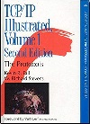
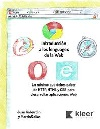
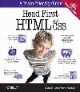
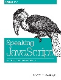

En este seminario cubrimos la base necesaria que necesitas dominar para realizar cualquier desarrollo web.
El objetivo es profundizar en las bases, de manera que puedas pensar la programación Web y las herramientas de desarrollo actuales.
La agenda del seminario es
La duración es de al menos dos encuentros de 4 horas cada uno.
En el encuentro vemos mucha teoría y realizamos mucha práctica.
La practica que realizamos es
TCP/IP Illustrated Volume1 Second Edition - Kevin R. Fall & W. Richard Stevens.
 Lo utilizamos como referencia para cubrir el modelo cliente servidor y cubrir el estudio que hacemos del protocolo
Introducción a los Lenguajes de la Web - Juan Gabardini y Martin Salias.
 Los amigos de Kleer pensaron este libro con el mismo objetivo del seminairo. Este seminario usa como base este libro y lo extiende. Gracias Juan y Martin!
Head First HTML and css - O’RELLY.
Utilizamos este libro para cubrir un core de elementos HTML y atributos css.
Speaking Java Script - Axel Rauschmayer O’RELLY.
Todo lo que vemos de js es de este libro. Es un libro tecnico que es unmustpara cualquier programador web y es gratuito en su versión online